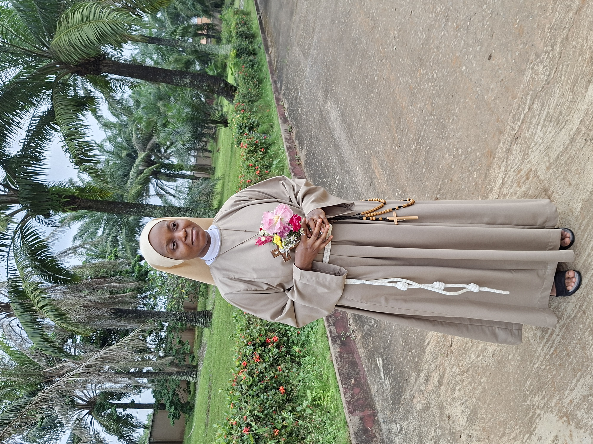

Simple Profession · Saturday, 24 October 2026
St. Clare Monastery Nigeria, Ijebu-Ode Diocese
On Saturday, 24 October 2026, at 10:00 AM, our dear Sister Maria Hope Ehizojie made her Simple Profession at St. Clare Monastery Nigeria, Ijebu-Ode Diocese. It was a day the monastery had been preparing for in prayer — and a day the whole Church will remember.
In the ancient rite of religious profession, a Sister does not simply make a promise. She offers herself. She gives her life — wholly, freely, forever — to God. And she does so not in secret, but in the presence of the Church, surrounded by family, friends, and her Sisters in religion.
Sister Maria Hope pronounced the three vows of the Poor Clares: poverty, chastity, and obedience. These are the vows that St. Clare of Assisi herself made in 1212, and that thousands of Poor Clare nuns have made every year since. They are not vows of restriction, but vows of freedom. They are not a rejection of the world, but an offering for the world.
Before her profession, Sister Maria Hope's hair was cut — the ancient, visible sign of consecration. It is the same gesture St. Clare made when she fled her father's house and cut off her hair before the altar. It was her way of saying: I belong to Christ now. No earthly power can claim me.
The shears fall. The hair is cut. And in that moment, the Sister is consecrated — set apart — given wholly to God.
The day began with a procession — a quiet, solemn walk toward the altar where Sister Maria Hope would give her yes. Through the monastery grounds, into the church, and up to the sanctuary, the procession moved with the dignity that befits a sacred moment. At the head of the procession, the Cross. Behind it, the Sisters. And at the heart of it, the young woman who was about to give her life to God.
Within the Mass, Sister Maria Hope was presented to the Church. Her family — her mother, her father, her siblings — stood with her at the front of the church and gave their approval of her vocation. It was a moment of profound emotion: a family giving their daughter to God, and a daughter giving herself to God in the presence of her family.
The Sisters sang with joy. The priests celebrated with reverence. The chapel was filled with light, with incense, and with the silent tears of those who understood the weight of the moment.
The most sacred moment of the day came when her family walked with Sister Maria Hope to the altar. There, they commended her into the hands of God in the Order of Poor Clares. It was a gesture of total surrender — a family giving away what they loved most, and a Sister receiving what God had prepared for her from the beginning.
This is the heart of the religious vocation. It is not the Sister alone who gives herself; it is the whole family, the whole community, the whole Church. Every "yes" to God is supported by the prayers of many.
Sister Maria Hope's yes is the seed of a lifelong yes. She has given herself to God in a new way — and the monastery, the diocese, and the whole Church have received her gift with gratitude.
Let us continue to pray for her. May the Lord who began this good work in her bring it to completion. May she persevere in joy. May her vows bear fruit for the Church and for the salvation of souls.
"Your beauty should not come from outward adornment... rather, it should be that of your inner self, the unfading beauty of a gentle and quiet spirit, which is of great worth in God's sight." — 1 Peter 3:3-4